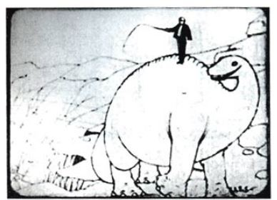
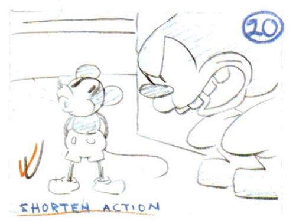

Contrary to all my personal beliefs, I bought a physical copy of a book, and none other that "The Illusion of Life", written by legendary Disney Wise Old Men, Frank Thomas and Ollie Johnston. A book that needs no introduction other than saying this is probably the most important material for students and animation enthusiasts. The text achieves this by telling the history of the Walt Disney Studio and explaining how the people who worked there developed the techniques for giving their characters the illusion of life.
I've been reading the .pdf version since I knew about its existence around 3 years ago but I've never finished it. That was the case until my Character Animation teacher recently highlighted the importance of this text and its usefulness for learning the arts of animation, ranking it even higher than classics like Richard Williams's or Eric Goldberg's animation handbooks. I decided then that I wanted to give it a proper reading from cover to cover, and here I am.

Since I received the physical copy, I've read the first two chapters so far, so I'll proceed to give a little summary of them. One feature of the physical version that I personally like is the possibility to check in detail all the beautiful illustrations and animation examples the book has.
Chapter 1, titled "An Art Form Is Born", begins by describing the humankind's search to develop art and to find ways to give movement and life to its creations. Starting from the cave paintings in southwest Europe to the first uses of film and camera, the authors describe how animation was born and all the challenges it initially faced. Despite the possibilities of this new media were infinite, the artists needed to learn how to communicate and make the audience emotionally involve with these drawings. The solution to this was giving personality to these fictional characters, and making people care about their feelings.
According to Thomas and Johnston, Walt Disney was one of the first entertainers who was commited to express more complex and meaningful ideas in animation. Together with his brother Roy, they made the efforts to push the boundaries of the medium by founding an animation studio and experimenting with new techniques that might resonate with the public.
Chapter 2, "The Early Days 1923-1933", delves into the story of the Disney Brothers and their first endeavors in the entertainment industry. I don't think many people are aware of how different was the medium at that age. Animation back then did not try to imitate real life nor caricature it. The technique was very limited and there was no other intention in the media but to get quick laughs through simple gags.
Walt Disney encouraged his staff to try different approaches to animation by using bottom pegs in the light tables and manually rolling through the pages to give fluidity to the drawings. Test shooting also gave the animators the possibility of checking their drafts and experimenting more. Disney employees studied live-action comedians and discussed how to properly stage the acting of the characters. All these efforts led their productions to stand out from their competitors and expand what was possible for animation.

Reading these chapters helped me to consolidate certain notions I had already learned about this animation history, and also taught me more about the philosophy and fundamentals behind this impressive craftsmanship.
It surprised me especially how little was animation valued at times, and I feel privileged to live in a age where so many amazing productions have been made. In this economic crisis and uncertainty we are facing, I believe it's important for artists to keep protecting their art so that animation can sustain its reputation among the audience.
I think anyone who works or wants to be part of the industry can benefit from taking a look at the words these wise old men have for us. We need to be aware of the evolution and efforts that a many people have made to reach the point we are at, so we can keep working toward more impressive productions and discover new ways to connect with people through art and passion.
Reference links: